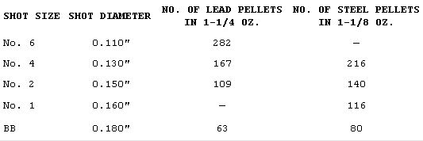
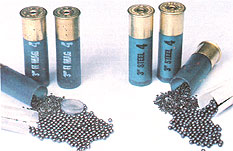

In more and more areas, waterfowl hunters are being required to use steel shot rather than the traditional (and toxic lead) But even if given the option, many folks feel confused when it comes to the questions of . . .
Each autumn some 2,000,000 hunters take to the fields, forests, and wetlands of the United States and Canada to shoot ducks, geese, and upland game birds (such as dove, pheasant, and grouse). And during a typical season, about 3,000 tons of lead shot is fired, the bulk of which - having missed its mark - falls to the ground or into the water.
Then, within a matter of days after the hunting season opens, researchers have found that autopsied fowl will begin to show up with one or more lead pellets in their gizzards. And as the season continues, the number of birds that have swallowed lead (as well as the pellet count in the individual bodies) increases.
Of course, the lead consumed by the creatures during the few months that they're hunted may not have a dramatic effect on the wild fowl population's health as a whole . . . but as months pass and the metal is absorbed into the systems of birds that have swallowed it, lead poisoning can result. Therefore, over the course of the winter, some fowl will die as a direct result of eating the toxic element, and many more will contract one or another common avian illness, brought on by a leadcaused weakening of their immune systems. Worse still, some of those sick birds may well initiate epidemics (of cholera, for example) that kill many of their nonpoisoned companions. In fact, the available reports indicate that as many as five waterfowl may die from leadrelated causes for every one that has an actual lethal poisoning.
Now the fact that lead is toxic is, of course, not a new discovery. The harm that the heavy metal can cause to humans has long been recognized (see "Children, Gardens . . . and Lead!" on page 38 of MOTHER NO. 70), and its possible negative effect on the waterfowl that accidentally eat it was commented on as far back as the 1840's. Then, in the 1950's and 60's, a great deal of research was done in the U.S. in an effort to prove or disprove the notion that lead pellets do present a danger to birds, and since 1970 the relationship between ingested lead shot and waterfowl mortality has been widely - if not universally - recognized.
Unfortunately, the problem is a complicated one . . . and the solution isn't - at least in many hunters' eyes - entirely clear. Furthermore, the folks here at MOTHER know (from the letters we receive and from our various reader surveys) that many of you are both hunters and concerned environmentalists. So we've decided that it's high time the subject of lead shot was discussed in our pages . . . and we hope to provide information that will allow you to evaluate the matter yourselves.
A SICK PICNIC
Though it's difficult to observe a duck or dove in the act of eating a lead pellet, most biologists assume that the fowl mistake the shot for some component of their normal diet . . . which would often include seeds, corn, and grit to aid digestion. Once the pellets enter their bodies, the grinding action in the birds' gizzards breaks down the shot and allows the element to be absorbed into the bloodstream, the organs, and - eventually - the bones. Specimens of both waterfowl and upland game birds (particularly doves) have been found with bone-lead content running well above the levels considered tolerable . . . and, in some cases, easily high enough to cause death. Of course, excessive bone-lead content is only an indication of long-term (chronic) exposure . . . many other birds have been injured or killed by acute (short-term) poisoning that affected their organs and/or brains.
Because the afflicted creatures may - before they die - travel a great distance from the place where they ingested the shot, it's been difficult to document the magnitude of the problem . . . though numerous studies have shown direct links between lead and waterfowl mortality in limited populations. Still, by extrapolating from the known deaths and the evidence of disease-related fatalities, experts can estimate with some assurance that between 2% and 3% of the waterfowl population of North America is lost to lead-shot poisoning each and every year (that's two to three million birds).
THE ALTERNATIVE
Shell manufacturers and independent researchers have, for more than 20 years, been working to develop an acceptable substitute for lead pellets in shot shells. But of the dozens of different materials that have been tried, only one has proved to be both ballistically effective and economically acceptable: steel. Unfortunately, a number of questions have been raised about steel shot, too, and the controversy has been raging ever since the first steel-shot-only hunting zones were designated in the early 1970's.
Since then, the areas in which only steel can be used to hunt ducks and geese .rave been expanded, and the range of gun gauges that fall under the restrictions has grown. To date, we know of no regions that have placed such restrictions on upland shooting . . . though new evidence of lead poisoning in doves and such could bring about regulation in those areas as well.
On the other hand, some hunters' organizations have actively fought the mandate in selected localities . . . because although the fact that lead does cause bird poisoning seems to be fairly well accepted today, the value of steel shot as a substitute isn't. Opponents of the "new" shells claim that they result in unnecessary crippling of birds and excessive gun wear.
We've discovered, however, that a wide body of competent research exists . . . so in the following paragraphs we're simply going to summarize the findings concerning lead versus steel shot.
BASIC BALLISTICS
Lead has been the preferred material for forming pellets since the first "scatter gun" was developed . . . and for seemingly good reasons. To begin with, the energy of a moving body is determined by its mass and its velocity. And as you probably know, lead is a very heavy metal. So when this substance is used to make shot shells, a great deal of weight can be packed into each pellet and therefore into the limited space in the casing.
Steel, of course, has a lower mass than lead (its weight is about 68% of that of the toxic metal, per unit of volume), and if equal-sized loads of steel and lead were fired at the same velocity, the latter material would definitely prove to be the superior shot. For example, information developed by Tom Roster of the Oregon Institute of Technology (who's one of the experts on shot ballistics) shows that a load of No. 4 lead (the numbering indicates size . . . higher numbers refer to smaller shot) with a rated velocity of 1,255 feet per second (FPS) will retain 3.65 foot-pounds of energy per pellet at 40 yards, and 2.36 foot-pounds at 60 yards. By contrast, a load of No. 4 steel fired at 1,250 FPS will retain only 2.10 foot-pounds at 40 yards and 1.22 foot-pounds at 60 yards. (It has been estimated that at least 2.0 foot-pounds per pellet is required to produce a clean kill on a duck.)
As Roster points out, however, that comparison isn't the most reasonable one. A more meaningful analysis might measure No. 4 lead against larger No. 2 steel shot . . . and also judge the steel at its usual velocity (perhaps 1,365 FPS), which is typically higher than that produced by lead-shot shells. When that sort of comparison is made, the steel retains 3.88 foot-pounds at 40 yards and 2.37 foot-pounds at 60 yards. But why, you may ask, should No. 4 lead be compared with No. 2 steel? Read on.
A CLOSER LOOK AT A FLYING SPHERE
Because steel is lighter than lead per unit of volume, the ballistic equivalent of No. 4 lead shot is actually No. 2 steel. Using the larger pellets, you see, compensates for the loss of mass per pellet, but of course fewer of the larger pellets - which also, because of their size, suffer from increased wind resistance - can be stuffed into a shell. This might seem to be a disadvantage . . . since the overall pattern of shot would be less dense. There are, however, some other aspects to consider.
While steel is lighter than lead, it's also considerably harder. When lead is used in shells, the velocity that the pellets can be accelerated to is limited, in part, by the amount that they will deform under that force. Steel is less likely to become misshapen, even when fired at velocities substantially higher than those employed with lead. In fact, steel shot shells typically achieve muzzle velocities that are at least 100 FPS higher than those of lead.
And, again because of the malleability of lead shot, the average steel pattern will hold its shape much better than would one of lead. According to Roster, most unbuffered (that is, without interpellet packing) lead loads fired through full-choke shotguns barely achieve a 70% pattern (the percentage of the shot that impacts within a 30" circle) at 40 yards and 35% at 60 yards. (These patterning percentages do not apply to buffered hardenedlead loads, which will outpattern even the best steel shells. Such ammunition is quite expensive, though, and Roster estimates that less than 5% of U.S. waterfowl hunters use it.)
Under the same conditions, a steel load typically patterns 80 to 92% at 40 yards and 45 to 60% at 60 yards. Add the fact that more steel shot will fit in a shot shell of the same size (167 versus 216 for No. 4 and 109 versus 140 for No. 2), which thereby reduces the loss in pellet count that results from going up a size, and you'll find that there will be more steel pellets available in the pattern to do the job. (The seeming contradiction that more of the light steel pellets can be put in a given shell is a result of steel-shot manufacturers' actually using more of the shell casing space to hold pellets.)
The more consistently spherical steel also strings out less than does lead shot . . . that is, the pellets stay in a tighter bunch and arrive at a given point at closer to the same time. This property aids in making more shot available to intercept a bird flying across the path of the oncoming pellets at speeds as high as 50 MPH.
You can see, then, that the density of an individual piece of metal is only one of the ballistic considerations involved in choosing between lead and steel shot. The majority of experts today agree that, at a range of up to 70 yards, a properly selected steel load should be at least as effective as lead. But let's go on to look into documented hunter performance with steel and lead shells.
THE WHAT AND HOW OF STEEL SHOT
For the moment, let's leave questions of value aside and discuss what a hunter needs to do to get the best results when using steel shot.
It's appropriate to select a steel shot size that's two designations larger than the lead shot you would normally use. For hunting grouse, say, you might try No. 6 or 4 steel rather than No. 8 or 6 lead. In turn, No. 4 or 2 steel works well for most ducks, and No. 2, 1, or BB could be used successfully for geese. A listing of Federal's 12 gauge shells - 2-3/4" long, with 3-3/4-dram equivalent charge - follows:
Because steel shot shells pattern better than do the conventional lead loads that most hunters use, it might be wise to consider using a more open choke when shooting steel. Thus, if you've been using a full choke, you may want to think about going to an improved cylinder to improve your hit rate. Of course, the best approach would be to test the patterns produced by your gun when using both lead and steel and then to decide on the best barrel for the hunting you do. It'll be up to you, however, to determine the most advantageous compromise between breadth of pattern (for more frequent hits) and density (for sure kills when you do hit).
IN PRACTICE
Numerous state conservation agencies - and the U.S. Department of the Interior itself - have conducted controlled studies of the performance of lead and steel shot in both duck and goose hunting. The research technique typically used was developed at Tulelake, California by the Department of the Interior during the 1977-78 and 1978-79 hunting seasons. In that test, over 2,200 hunters fired more than 40,000 steel and lead shot shells (without knowing which was which) and brought down a total of 4,182 whitefronted, snow, and cackling geese.
The hunters were given a random selection of steel and lead shells of various sizes and were asked to record the number of shots taken, the estimated range, and the effect (bagged, crippled, or missed). All birds that were visibly hit but not bagged were considered to be crippled.
In the Tulelake study, there was no significant difference found between lead and steel. For every 100 shots fired, the hunters were able to bag 17.5 geese (and cripple 7) at an average range of 46.4 yards. Nor did statistical differences show up in either bagging or crippling rates, whether BB, No. 1, No. 2, or No. 4 shot was used. (Interestingly enough, hunters regularly indicated more satisfaction with shell performance when they thought they'd been shooting lead . . . even though some who reported that fact had actually been using steel shot.)
The Missouri Department of Conservation has done a similar study, with duck hunting as the subject. During the 1979 waterfowl season at the Schell-Osage Wildlife Management Area, researchers had hunters shoot a mix of buffered and unbuffered No. 4 lead, No. 4 steel, and No. 2 steel shot. During that season, hunters bagged 20.6 ducks per 100 shots with unbuffered lead, 19.1 with buffered lead, 18.0 with No. 4 steel, and 17.4 with No. 2 steel. There was no recorded difference in the crippling rate. The results also showed that hunters were most likely to take a shot in the 30- to 40-yard range, and that their bag rate dropped considerably beyond that distance.
Other studies have provided similar results, with little or no difference in the bagging rate (in fact, steel has seemed to be more effective in some cases) and no significant difference in crippling. Thus one of the concerns about steel shot - that more birds may be wounded by the less energetic pellets - doesn't seem to be borne out in fact.
GUN WEAR
Another concern is that steel shot may speed barrel wear. It was first thought that the hard metal pellets might scratch gun bores, but thicker and more effective shell wadding has all but eliminated that fear.
Choke expansion, however, may actually be caused by steel shot under some circumstances. Older guns with soft, thin barrels (double-barreled firearms, in particular) may suffer some deformation at the choke when firing steel shot. Companies such as Winchester and Remington have fired hundreds of thousands of shells through their modern guns and have declared all of them fit for steel shell use. But in older shotguns, a swelling of up to about 0.005" has been recorded ... though the change didn't adversely affect the weapons' patterning performance. Still, if you have an old and valuable firearm, by all means check with its manufacturer before shooting steel shot.
COST
Making steel pellets is reported to cost about 30 cents more per pound than does the comparatively simple process of agglomerating lead shot. For that reason - and because of the thicker wadding used with the harder pellet - you might expect a higher price tag on steel shells. Buying locally, though, we paid $10.80 for a box of 3"-magnum No. 2 lead shells, and only $11.75 for a box of 3"-magnum No. 2 steel shells. At that rate, we wouldn't consider the cost difference significant . . . particularly if substituting steel will slow the distribution of lead in our environment, help save some birds, and perhaps eventually allow for increased bag limits.
If you're a reloader, however, you may not readily find the materials for refilling steel shells, and it's extremely important that you not substitute lead shell components (such as wadding) for the ones made to handle steel shot. For the time being, at least, the moneysaving option of reloading isn't generally available to folks who shoot steel.
THE UPSHOT
In the long run, there's probably not much point in arguing the merits of the two metals, since there are now designated steel-shot-only zones in every major flyway for waterfowl in the country. Attempts to challenge those regulations have met with failure, and upland game area restrictions could be on the way, as well. Consequently, the wisest plan of action at present - whatever your preference - might be to get some steel shot and learn how to use it . . . and one way to start doing so is by reading the information on the subject that accompanies this article.
EDITOR'S NOTE: While the studies quoted here likely have saved the lives of many waterfowl, there was also a measure of cruelty in them. For a discussion of this difficult problem, turn to page 16.
|
|
 |
 |